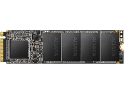
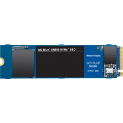
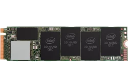
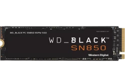
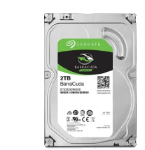
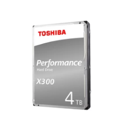
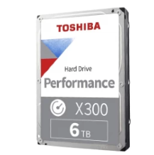
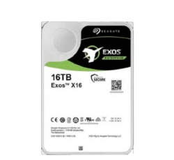

El XPG SX6000 Lite es un SSD de nivel de entrada asequible. El precio puede ser barato, pero esto va a ser enormemente más rápido que cualquier disco duro.
Si desea los beneficios de velocidad de un SSD, pero tiene muy poco de sobra, puede optar por las capacidades muy pequeñas. Pero debe estar estrictamente atento a mantener solo su sistema operativo y los programas más utilizados en el SSD.
$35
El WD Blue SN550 combina un gran rendimiento con un excelente precio.
Esta capacidad es una cantidad decente de almacenamiento y puede acomodar la mayoría de sus programas de uso frecuente. Este es un punto óptimo en términos de valor para su $ $ $, pero se quedará sin espacio si descarga muchos juegos enormes, o muchas películas y series.
$43
El Intel 660p es un SSD equilibrado que proporciona un buen rendimiento a un buen precio.
Un terabyte de almacenamiento puede ser fácilmente suficiente para muchas personas, especialmente si se asegura de que esté reservado para el sistema operativo y los programas. Si su biblioteca de medios es pequeña, entonces puede tener fácilmente ~ 1 TB como almacenamiento y sin discos duros en absoluto.
$80
El WD Black SN850 logra un rendimiento absolutamente estelar, ¡pero costará un brazo y una pierna!
Para un SSD, 2TB es bastante gigantesco. Nunca tendrá que preocuparse por quedarse sin espacio para sus programas, e incluso puede mantener una cantidad decente de medios también.
$320
Una unidad de 2 TB normalmente ofrecerá una excelente capacidad de almacenamiento por el precio.
Un disco duro de 2 TB puede contener alrededor de 400,000 canciones MP3, 8,000 episodios de series de televisión, 1,000 películas o 40 juegos enormes.
$47
4TB es una gran cantidad de espacio de almacenamiento, por un precio relativamente barato. Será un poco más ruidoso y un poco menos confiable, pero eso no es un problema, porque hace una copia de seguridad de sus datos importantes, ¿verdad?.
$105
¡Oh mi, 6TB! Un total de 6 terabytes de almacenamiento. ¡Eso es bastante grande, incluso para los estándares de los acaparadores de datos! Vas a tener que esforzarte mucho para llenar este tipo de capacidad.
Un disco duro de 6 TB puede contener alrededor de 1,200,000 canciones MP3, 24,000 episodios de series de televisión, 3,000 películas o 120 juegos enormes.
$155
¡Increíble! ¡16 terabytes de información! Un terabyte es de 1.000.000.000.000 de bytes, ¡y este disco duro tiene dieciséis de ellos! ¡Podrías almacenar toda la Wikipedia en inglés allí! Asegúrese de hacer una copia de seguridad de sus datos, porque perder 16 TB hará llorar a los cachorros.
$300
